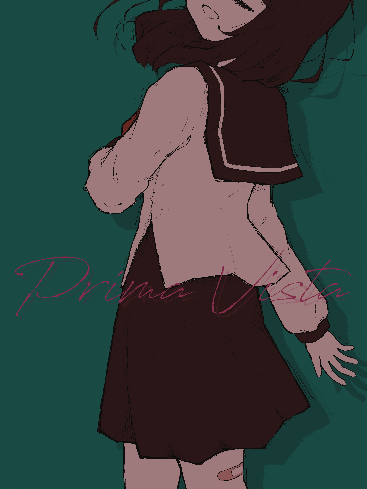

夏ももう終わり
夏ももう終わりだそうですよ、信じられませんが。多忙すぎて夏に描くべきあらゆる絵を描き逃したわけですが、世間的に夏とされる8月の残り一日で間に合わせるべき絵……と思ってこれに至りました。

Prima Vista。Caelyta収録の夏の曲です。呟いた後に塗り分けミスに気づいてしまったので、ここには加筆版をあげておきます。きれい丁寧うんぬんを考えず がしがし線を引くのとっても楽しい。他にも何曲かこういうノリで軽い絵を生やしたいですね。
言葉選びにすごいセンスを感じるので、ぜひ本家PVも見てほしい。
本当はこれも昔からずっと描こうと思っていた曲なんですが、いつの間にかnヶ月。実は構図で悩み倒してn回ボツになっています。2番サビの「ただ棒切れの足で流れに身を任せていた それしかボクはまだ思いつかない」「踏切越える前に思い出した どうせだったら どうせだったら 少しだけ暴れてみようか」この2つですでに2枚構図が思いつくくらい場面と情景に溢れた曲で、一体どこを切り取ればいいのか、なかなか答えが出ませんでした。
随分と長い間……少なくともB2から、遡れば2016年あたりからずっと好きな曲をお題にして創作を続けているわけですが、絵という形しか使いこなせない私には、残念ながら時間軸を表現する手段がありません。これは軽い呪いのようなものなんですけど、大昔の私は中途半端に踊ることを覚えてしまったので今でもそれはまあ大変つよく音に惹かれるわけですが、踊りなんてもの自分の体という好きでもないものを他人の前でぶん回す違和感と周辺コミュニティへの馴染めなさと曲の好みと踊りという表現手段の乖離1とで結局とうの昔に捨ててしまったので、昔から積み上げられてきた嗜好と今ある表現手段との間の溝が埋められないんですよね。時間軸を削り取っていかに一枚絵に収めるかというのは面白いところでもあるのですが、ぶっちゃけもどかしいことのほうが多い。ちなみにbpm120周辺が好きなのもWACCAが得意な上に楽しいのも全部この呪いのせいです。人間って単純だね。
この曲を描くにあたって、組写真チックな表現を検討したことがありました。組写真って伝わる用語なのか？どの範囲の用語なのか未だに把握していないのですが、コンテストに複数枚写真を並べて一つの作品としたものを組写真と、少なくとも当時の写真部ではそう呼んでいました。そうです実は写真部だったこともあって。昔からいろんな部活を転々とする人だったので。複数枚を準備して並べるというのは、静止画が時間を表現する手段の一つですね。絵だと準備コストがでかくてなかなか手が出せませんが。
組写真と言えば、高2のときの県の写真コンテストを思い出します。隣の高校の一つ下の少年が出していた作品がすごかったんですね。ちょうどPrima Vistaのような、海辺でセーラー服の少女が踊るのを撮った4枚組でした。絶妙に顔はわからない構図で、流れる髪と四肢の動きを捉えるのがめちゃくちゃ上手かった。作品1枚ずつお偉いさんが講評を仰ってくださる場があったのですが、これは誰を撮ったんだいという問いにおそらく撮り手の少年が顔を俯けて、事情を知るのであろう同輩達が見かねてくすくす笑うという、おそらく世間的には微笑ましいとされる瞬間が未だに生々しく記憶に残っています。つまりそういうことですね。あいにく私にはそういう人の好き方ができないので、すごいなあと思ったのと純粋にぎょっとしたのと。
会の後に個人的にお偉いさんにお話を伺ったりしました。うちの県は南のとある高校に全国級のすさまじく強い写真部があるんですけど、そこの顧問さんが一週間に1000枚は撮らないと写真は上手くならないと仰って。当時そろそろ受験期が顔を出す秋頃で、そんなことやってられないと思った私はその日中に写真をやめるのを決めてしまいました。入賞の顔ぶれからして明らかに人間を撮ると高評価がもらえる世界で、人間にその類の美しさを一切見いだせなかった私は、あっこれ向いてないんだな、と、一瞬で諦めがついてしまったという。どうしても、物体としての人間がそんなに好きになれません。未だにまるっこいふにふにデフォルメ美少女を描くのも、人体を正確に表現するモチベーションが一切ないから。絵は自分の好くもの、美しいと思うものを描く場なので。人体をそうとわかる記号以上に現実に則して描こうとするのは、私の創作に対する主義に反します。
ちなみに、翌年も彼の作品だけは見に行こうと思っていたのですが、運悪く会場が遠い年で、平日開催だったので諦めるしかなかったという。顔どころか名前も一切わからないので、未だに写真を続けているのか、そもそもその年も作品を出していたのか、知る術がありません。なのにあの作品だけは記憶に残っているの、恐ろしいですね。
夏の終わりに呪いを思い起こさせる、とってもいい曲です。Prima Vista、聴いてね。
-
音ゲー曲、人間が踊るには速すぎるので……。 ↩︎